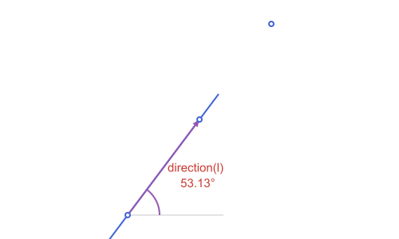

Points, Lines & Rays: Direction & Transforms
These use the segment, line and ray from Points, Lines & Rays: Creating Them:
using Apollonius
A = APPoint(3.0, 4.0)
O = APPoint(0.0, 0.0)
s = APSegment(O, A)
l = APLine(O, A)
r = APRay(O, A)Direction, slope and predicates
direction(l) # ⟨3.0, 4.0⟩: l.p2 - l.p1, as an APVector
rad2deg(slope_angle(l)) # ≈ 53.13°
v = APVector(1.0, 1.0)
rad2deg(slope_angle(v))
is_collinear(O, A, APPoint(6.0, 8.0))
is_on_line(APPoint(6.0, 8.0), l)
is_on_segment(APPoint(6.0, 8.0), s) # false: beyond Afalse| Function | Returns | Meaning |
|---|---|---|
direction | APVector | non-normalized direction of an APLine/APRay/APSegment |
slope_angle | angle | atan(dy, dx) of that direction, in radians; also for an APVector |
is_collinear | Bool | do three points lie on a common line? |
is_parallel / is_perpendicular | Bool | relation between two lines |
is_on_line / is_on_segment / is_on_ray | Bool | is a point on this line / this finite segment / this half-line? |
side_of_line | -1, 0 or 1 | which side of a line a point falls on |
l_horiz = APLine(APPoint(0.0, 0.0), APPoint(4.0, 0.0))
side_of_line(APPoint(2.0, 1.0), l_horiz) # 1 : "above"
side_of_line(APPoint(2.0, -1.0), l_horiz) # -1 : "below"-1l_vert = APLine(APPoint(0.0, 0.0), APPoint(0.0, 4.0))
is_parallel(l, APLine(APPoint(1.0, 0.0), APPoint(4.0, 4.0))), is_perpendicular(l_horiz, l_vert)(true, true)r = APRay(APPoint(0.0, 0.0), APPoint(4.0, 0.0))
is_on_ray(APPoint(10.0, 0.0), r) # true: ahead of the origin, same direction
is_on_ray(APPoint(-1.0, 0.0), r) # false: on the line, but behind the originfalseis_on_line/is_on_segment/is_on_ray are also exactly what Base.in uses under the hood, so the more natural p in l reads just as well:
APPoint(6.0, 8.0) in l, APPoint(10.0, 0.0) in r(true, true)
Lengthening a line or segment
extend_line(l, before, after) lengthens the line through l.p1 and l.p2 by fractions of distance(l.p1, l.p2) past each point and returns the resulting APSegment. The fractions are relative to the two defining points, so the same value adds more length to a longer line. A negative fraction shortens that end, and an APSegment is accepted too.
base = APLine(APPoint(0.0, 0.0), APPoint(10.0, 0.0))
ext = extend_line(base, 0.5) # half of 10.0 more, at each end
ext.p1, ext.p2, distance(ext.p1, ext.p2)([-5.0, 0.0], [15.0, 0.0], 20.0)
The same lengthening is available when drawing, as the add keyword of path; see Drawing with Luxor.jl. More on this function is in Marks, Labels & Decorations.
Distance to a line, segment or ray
distance also works between a point and any of APLine, APSegment or APRay: the perpendicular distance to the infinite line in the first case, but clamped to the finite extent for the other two (so a point "past the end" measures to the nearest endpoint, not along the infinite extension):
far_point = APPoint(10.0, 10.0)
distance(far_point, l), distance(far_point, s), distance(far_point, r)
# perpendicular to the infinite line; clamped to the finite segment [O,A]; clamped to the ray(2.0, 9.219544457292887, 10.0)is_on_line/is_on_segment/is_on_ray each also take just the line/segment/ray (no point) to build a reusable one-argument predicate, for filter:
pts = [APPoint(2.0, 0.0), APPoint(2.0, 1.0), APPoint(-1.0, 0.0)]
filter(is_on_ray(r), pts) # only the point that's on r1-element Vector{APPoint{2, Float64}}:
[2.0, 0.0]
Projection, reflection and the perpendicular foot
projection drops a point onto a line at a right angle; reflection mirrors a point through another point (its use for mirroring across a line is: project first, then reflect through the foot).
P, Q = APPoint(1.0, 1.0), APPoint(6.0, 3.0)
l = APLine(P, Q)
C = APPoint(2.0, 6.0)
foot = projection(C, l) # the perpendicular foot of C on l
Cref = reflection(C, foot) # C mirrored through that foot, i.e. across l[5.172413793103448, -1.931034482758621]
projection also takes an angle keyword (radians, default pi/2, measured counterclockwise from l's own direction) for the oblique projection of p onto l: the point where a line through p at that angle meets l, instead of the perpendicular:
projection(C, l; angle=pi / 2) == foot # pi/2 is the ordinary case
projection(C, l; angle=pi / 3) # a genuinely oblique projection[1.2967144497652765, 1.1186857799061105]angle must be strictly between 0 and π. At either end the projecting line would be parallel to l itself, so there'd be no single intersection point:
try
projection(C, l; angle=0.0)
catch e
e
endArgumentError("projection: angle must be strictly between 0 and π (got 0.0)")Like the predicates above, projection(l; angle=...) (no point) builds a reusable one-argument function, for map/|>:
map(projection(l), [C, P, Q]) # project a whole collection onto l at once3-element Vector{APPoint{2, Float64}}:
[3.586206896551724, 2.0344827586206895]
[1.0, 1.0]
[6.0, 3.0]Rotation, homothety and translation
rotate turns a point about a center by an angle (radians, counter-clockwise); homothety scales it by a factor k about a center (k = -1 is a point reflection, 0 < k < 1 shrinks towards the center); translate shifts it by an APVector (the fourth member of this quartet, and the only one with no center: a translation has none). rotate/homothety default to the origin when no center is given.
rotate(C, pi / 2, P) # C rotated 90° about P
homothety(C, 2.0, P) # C scaled by 2 about P
translate(C, APVector(1.0, -1.0)) # C shifted by (1,-1)
barycenter([P, Q, C], [1.0, 1.0, 2.0]) # weighted average of the three[2.75, 4.0]Parallels, perpendiculars and bisectors
midpoint(P, Q) # [3.5, 2.0]: the plain average of the two
parallel_through(l, C) # line through C, parallel to l
perpendicular_through(l, C) # line through C, perpendicular to l
pb = perpendicular_bisector(P, Q) # perpendicular to [P,Q] through its midpointAPLine([3.5, 2.0] -> [1.5, 7.0])vertical_line and horizontal_line build the line x = x0 or y = y0 directly, from the number or from a point to pass through:
vertical_line(3.0) ≈ vertical_line(APPoint(3.0, -8.0))
horizontal_line(APPoint(3.0, -8.0))APLine([3.0, -8.0] -> [4.0, -8.0])
angle_bisectors is the analogous construction for two intersecting lines: it returns both bisectors (they are always perpendicular to each other), as a 2-element vector.
xaxis = APLine(APPoint(0.0, 0.0), APPoint(4.0, 0.0))
yaxis = APLine(APPoint(0.0, 0.0), APPoint(0.0, 4.0))
angle_bisectors(xaxis, yaxis) # the two diagonals y = x and y = -x2-element Vector{APLine{2, Float64}}:
APLine([0.0, 0.0] -> [1.0, 1.0])
APLine([0.0, 0.0] -> [1.0, -1.0])